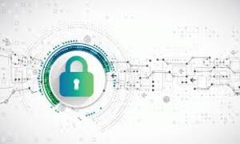

Cybersecurity For Beginners: Network Attacks
Cybersecurity For Beginners: Network Attacks
Welcome all to cyber security course “Cybersecurity For Beginners: Network Attacks“.
Whether you want to get your first job in IT security, become a white hat hacker, or prepare to check the security of your own home network, Owl offers practical and accessible ethical hacking courses to help keep your networks safe from cybercriminals. Our Student says that: This is the best tech-related course I've taken and I have taken quite a few. Having limited networking experience and absolutely no experience with hacking or ethical hacking, I've learned,practiced, and understood how to perform hacks in just a few days.
Cybersecurity For Beginners Subjects
- Network Fundamentals
- ARP Spoofing/ARP Poisonning
- The “Man in the Middle” ( Mitm )
- Attaching Kali to GNS3 Network
- Network Sniffing
- Using MITMf Against Real Networks
- How to prepare the lab environment for hands-on experiments
- MAC Flooding
- VLAN Hopping
- Network Device Audits
- Cyber security
- Hacking
- Ethical Hacker
Duration of lesson:12 weaks - 6 hours per weak. Total: 72 hours
Cost: 780€ - 20% payment in advance, 4 interest free installments.
Didn't find what you want?
Take a look at the cooperating sites:
Introduction to Cyber Security Specialization
Introduction to Cyber Security Specialization
Introduction to Cyber Security was designed to help learners develop a deeper understanding of modern information and system protection technology and methods. The learning outcome is simple: We hope learners will develop a lifelong passion and appreciation for cyber security, which we are certain will help in future endeavors. Students, developers, managers, engineers, and even private citizens will benefit from this learning experience. Special customized interviews with industry partners were included to help connect the cyber security concepts to live business experiences.
>Introduction to Cyber Security Specialization Subjects
- Cryptography
- Cybersecurity Risk
- Assessment Cyber Defense
- Cyber Attacks
- Information Security (INFOSEC)
- Denial-Of-Service Attack (DOS)
- Public-Key
- Cryptography
Duration of lesson:8 weaks - 6 hours per weak. Total: 48 hours
Cost: 580€ - 20% payment in advance, 4 interest free installments.
Didn't find what you want?
Take a look at the cooperating sites:
Cybersecurity Risk
Management Framework Specialization
Cybersecurity Risk Management Framework Specialization
Gain a holistic understanding of NIST cybersecurity fundamentals. You will learn about the RMF process and managing risk by identifying, assessing and responding to risk. Additionally, you will learn how to use the framework to assess an organization's cybersecurity risk and the steps to implement or improve a cybersecurity program. You will deep dive in to the NIST 800-171document where you will learn how to understand each of the 110 requirements and how to satisfy each of them. You will learn ow to create a BOE including OPP a SSP and POAM. Upon completion of this course, you will have the knowledge and skills to implement the controls required by the NIST 800-171 framework and build your BOE.
Cybersecurity Risk
Management Framework Specialization Subjects
- NIST CSF:Basic understanding of NIST cybersecurity fundamentals
- NIST DoD RMF:The RMF provides a disciplined,
structured and flexible process for managing security and privacy risk.
- NIST 800-171: NIST SP 800-171 is a cybersecurity framework of 110 controls
in 14 families published by the National Institute of Standards and Technology (NIST).
Duration of lesson:16 weaks - 8 hours per weak. Total: 128 hours
Cost: 980€ - 20% payment in advance, 5 interest free installments.
Didn't find what you want?
Take a look at the cooperating sites:
IT Fundamentals for Business Professionals:
Cybersecurity and social implications

IT Fundamentals for Business Professionals
Throughout this specialization, you will learn concepts around cybersecurity tools and processes, system administration, operating system and database vulnerabilities, types of cyber attacks and basics of networking. You will also gain knowledge around important topics such as cryptography and digital forensics.Discuss the evolution of security based on historical events. List various types of malicious software.Describe key cybersecurity concepts including the CIA Triad, access management,incident response and common cybersecurity best practices.Identify key cybersecurity tools which include the following: firewall, anti-virus, cryptography, penetration testing and digital forensics.
IT Fundamentals for Business Professionals Subjects
- Operating System Security
- Database Vulnerabilities
- Cybersecurity networking
- Basics Cyber Attacks
- Information Security (INFOSEC)
- Malware
- Network Security
- Sql Injection
Duration of lesson:12 weaks - 6 hours per weak. Total: 72 hours
Cost: 760€ - 20% payment in advance, 5 interest free installments.
Didn't find what you want?
Take a look at the cooperating sites:
Information Security:
Authentication and Access Control
Information Security:
Authentication and Access Control
Learn more fundamentals of information security, including Introduction to Cryptography, AACC. This is the 2nd course in the intermediate, undergraduate-level offering that makes up the larger Cybersecurity Fundamentals MicroBachelors Program. We recommend taking them in order, unless you have a background in these areas already and feel comfortable skipping ahead.
Information Security - Authentication and Access Control Subjects
- Information Security - Introduction to Information Security
- Information Security - Authentication and Access Control
- Information Security - Advanced Topics
- Network Security - Introduction to Network Security
- Network Security - Protocols
- Network Security - Advanced Topics
- Penetration Testing - Discovering Vulnerabilities
- Penetration Testing - Exploitation
- Penetration Testing - Post Exploitation
Duration of lesson:10 weaks - 8 hours per weak. Total: 80 hours
Cost: 800€ - 20% payment in advance, 4 interest free installments.
Didn't find what you want?
Take a look at the cooperating sites: